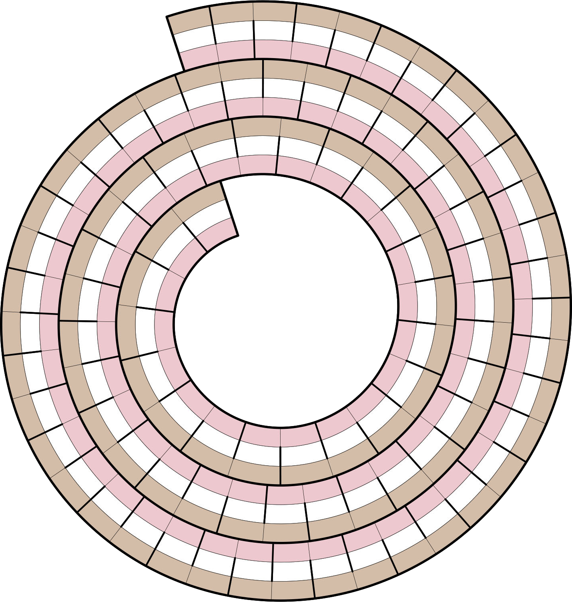

{% include "round_files/endgame/book.tmpl" with book="cts-apunctuat" %}
Tan
- Frasier and Niles, for two
- Grand
- and Louis (classic jazz album)
- Rancher's need, sometimes
- Throat
- Short math course?
- Portion of a larger loan
- Name in 1920s crime-story headlines
- Small bit of land
- Seabird with a tube-shaped nose
- Nearby
- Just shy of all
- One with a sentence
- Bird or fruit
- Open a clam
- Description of what has happened, in military speak
- Make available (2 words)
Pink
- Yorkshire city
- Two-syllable poetic bit
- cloud
- Dancing in Cuba, maybe
- Creak or croak
- Suddenly goes thataway
- Planktonic crustaceans
- More than a trot, less than a gallop
- One is one
- Item used on a piste
- Calm
- UV emitter
- Buy something from the market, say
- Strollers, but not small motorized cars (hyph.)
- Came up
- Sing softly
- Some are soldiers
Ice Cream Roll
- 100 pascals (8)
- A layered food (other than an ice cream roll) (7)
- Adherent of the Horned God (6)
- Adopting, as a responsibility (8; two words)
- Bakers' tools (7)
- Become suddenly popular, as a fad (7; two words)
- Browned (6)
- C10H16O (7)
- Cash (6)
- Chad's neighbor (7)
- Don't remotely tiptoe (5)
- First name in American dance (5)
- From that place (6)
- German wine grape (8)
- Go downhill fast? (4)
- Green (5)
- Hiker's tote (8)
- In trouble (6; two words)
- Lifeless (6)
- Missive between mates (10; two words)
- Most on edge (9)
- Online troublemaker (5)
- Open (6)
- out (lost strength) (7)
- Pale purple color (5)
- Participants in the Battle of Hastings (7)
- Pay on top of your pay (5)
- Peruvian evergreen (10)
- Polo, for example (5)
- Pulitzer-winning comic strip artist (7)
- Saying "Give us some slop!", maybe (7)
- Scanner targets, briefly (4)
- Some gamblers in the casino (12)
- Suffer from the heat (7)
- Taking the spotlight for a while (7)
- The Worst (TV show) (5)
- Things (5)
- Thoroughly digging (4)
- Threw a party, say (10)
- Walker's aid (4)
- Windswept creation (8; two words)
- You might get there in a rush (8)